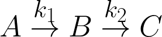

Two first-order, liquid-phase reactions A→B→C take
place in an isothermal batch reactor. The reactor initially contains only A at a concentration of 2
mol/L. The activation energy Ea,2 of the second reaction (155 kJ/mol) is higher
than the activation energy Ea,1 of the first reaction
(145 kJ/mol). Vary the
temperature of the reaction with a slider. Select Display: "selectivity" to plot selectivity
(CB/CC) versus time. The selectivity changes with temperature because
the reactions have different activation energies.
Consider the first-order reactions . The reactor is isothermal, and
the temperature of the reactor is set with a slider. As the temperature changes, the selectivity
CB/CC for the desired product B changes. Mole balances are
done:


where
CA, CB, and CC are the concentrations of A,
B and C (mol/L), t is time (h), k1 and k2 are the
rate constants for the first and second reactions (1/h), A1 and A2 are
pre-exponential factors (1/h), Ea,1 and Ea,2 are
activation energies (kJ/mol) where Ea,1<Ea,2, R
is the ideal gas constant (kJ/[mol K]), and T is temperature (K) of the reaction.
References
[1] H. Scott Fogler,
Essentials of Chemical Reaction Engineering, Boston: Pearson Education, 2011 pp. 298-302.
This simulation was created in the Department of Chemical and Biological Engineering, at University of Colorado Boulder for LearnChemE.com by Neil Hendren under the direction of Professor John L. Falconer. It is a JavaScript/HTML5 implementation of a simulation by Rachael L. Baumann. Address any questions or comments to learncheme@gmail.com. All of our simulations are open source, and are available on our LearnChemE Github repository.
If this simulation is too big for your screen, zoom out using  +
+  on Mac or
on Mac or  + on Windows. To zoom in, use +
+ on Windows. To zoom in, use +  on Mac or + on Windows.
on Mac or + on Windows.